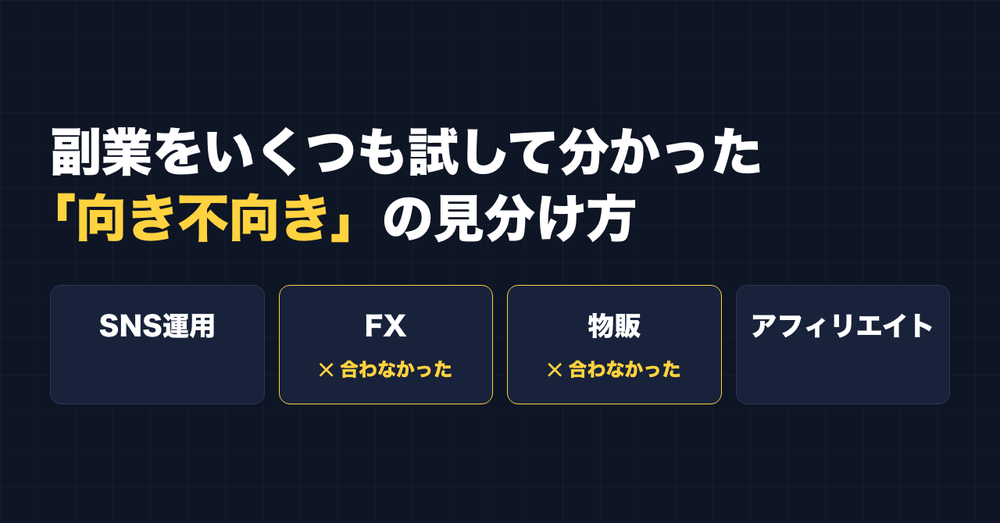
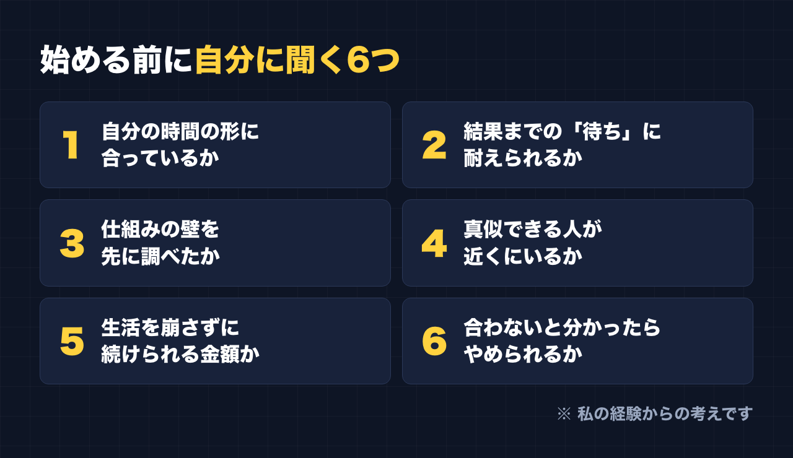

1. タイトルをコピーして、note のタイトル欄に貼る
2. 「本文1をコピー」から順にコピーし、note の本文に貼る
3. 青いラベルの位置に、images フォルダの同じ名前の画像を入れる（本文には貼られません）
※ 見出しが普通の文字になった場合は、その行を選んで「大見出し」を設定してください

SNS運用、FX、物販、アフィリエイト。
私がこれまでに手を出した副業を並べると、こうなります。講座にもいろいろお金を払ってきました。
そのうち、FX と物販は合いませんでした。
この記事は「どの副業が稼げるか」の話ではありません。私にそれを語れるほどの実績はありません。書きたいのは、いくつも試して、合わなかったものも経験したうえで、「次に何かを始めるなら、先にこれを自分に聞く」と思っていることです。
先にお断りしておきます。FX については、私の体験として書くだけです。投資をすすめたり、やめるように言ったりするものではありません。
私のこと
会社員で、4人の子どもの父親です。PTA 会長もやっています。副業にあてられるのは、帰宅後の短い時間や、仕事の休憩の合間くらいです。
目標は脱サラですが、まだ遠いです。アフィリエイトで少し売れたことはあります。自分で作ったツール「副業ドラフト」は、今のところ売上ゼロです。
そんな立場から書いています。
合わなかった2つ：FX と物販
FX と物販は、私には合いませんでした。
ここは、もっともらしい理由を後からつけて書くこともできます。でも、それをするとたぶん嘘が混ざります。なので、はっきり言えることだけ書きます。
- FX は、自分には合わなかった
- 物販も、自分には合わなかった
これだけです。
同じものが、ほかの人には合うこともあると思います。副業に「正解」があるのではなく、「自分との相性」がある。私はこの2つで、それを身をもって知りました。
アフィリエイトで知った「仕組みの壁」
アフィリエイトは、少しだけ売れたことがあります。続けてみて分かったのは、やり方以前に「仕組み」の壁があることでした。
- オープンASP（誰でも登録できるところ）は、大量に売る必要がある
- クローズASP（招待制のところ）は、中に入らないと紹介してもらえない
- 楽天や Amazon は、厳しい
頑張り方の前に、仕組みで決まっている部分がある。これは、やってみて初めて実感したことです。
SNS運用で知った「真似る」の効き目
SNS運用では、こんなことがありました。
別で運用しているアカウントで、伸びている投稿の構成を真似してみたところ、それまで反応が100にも届かなかったのに、1本だけ大きく伸びました。ただ、その次からはまた、いいね一桁台に戻りました。
真似るなら、フォロワーが何百万人もいる人ではなく、フォロワーは数百人なのに伸びている投稿。今の私はそう考えています。有名な人の投稿は、その人の知名度で伸びている部分があって、自分がそのまま使えるとは限らないからです。
ここで分かったのは、「真似る」ことには確かに効き目がある、でも一発当たっても続けなければ元に戻る、ということでした。
次に何かを始めるなら、先に自分に聞くこと
ここからは、私の経験をもとにした「私の考え」です。副業選びの正解ではありません。でも、次に何かを始めるなら、私は先にこれを自分に聞きます。

1. その副業に、自分が使える時間の形は合っているか
まとまった時間が必要なものか、5分・10分の細切れでも進むものか。私のように、帰宅後はほとんど動けない人もいます。自分の時間の「形」と合わないものは、やる気があっても続きません。
2. 結果が出るまでの「待ち」に、自分は耐えられるか
すぐ数字が動くものもあれば、何か月も手応えがないものもあります。どちらが自分にとって楽か。これは人によってまったく違うと思います。
3. 仕組みの壁を、始める前に調べたか
アフィリエイトで知ったように、努力の前に「構造」で決まっている部分があります。報酬の仕組み、参加の条件、どれくらい売る必要があるか。先に調べておけば、あとで「こんなはずじゃなかった」が減ります。
4. 真似できる人が、自分の近くにいるか
どの講座でも言われたことの根本は、続ける、売れている人を真似る、手を動かす、でした。真似したいと思える人、しかも自分と近い規模で伸びている人が見つかるかどうか。見つからないジャンルは、手探りの時間が長くなります。
5. 生活を崩さずに続けられる金額か
講座代や元手が、家計を揺らすほどの金額なら、私は一度立ち止まります。副業は本業と家族の上に乗っているものだからです。
6. 「合わない」と分かったとき、やめられるか
これがいちばん大事かもしれません。合わないと分かったのに、払ったお金や時間がもったいなくて続けてしまう。私は FX と物販から離れて、いまは別のことに時間を使っています。やめることも、向き不向きを知るための一歩だと思っています。
いま、私がやっていること
いまは、発信と、自分で作ったツールに時間を使っています。
AI は、リサーチと下書きに使っています。ただ、AI が書いたきれいな文章より、自分がボソッとつぶやいた一言のほうが反応があります。なので、人間味の部分は自分で足すようにしています。
これが自分に向いているのか、まだ答えは出ていません。売上ゼロのツールもあります。それでも、今のところ続けています。続けられているかどうかが、今の自分にとっての一つの目安です。
ここからは宣伝です。
関連する有料記事（準備中）：「フォロワー数百人のアカウントで6.4万回表示された投稿の"構成"を分解する」
記事の中で触れた「伸びた1本」の構成を、分解して書く予定です。
公式LINEでは、発信や副業に使えるプロンプトを配っています。「特典」と送ると、LINE限定のプロンプト5本が届きます。
https://lin.ee/RzyA13P
自分の強みを整理して、SNSの投稿の下書きまで作れるツール「副業ドラフト」も作っています。Threads の下書き3本までは無料で試せます。
https://note-threadssf.onrender.com
最後まで読んでいただき、ありがとうございました。